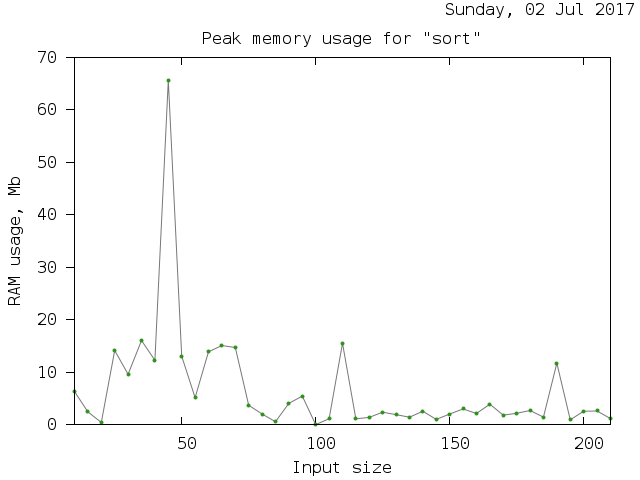

Testing¶
This page explains how Boost.StaticViews tests work and shows some up to date results. There are three kinds of tests. First, there are Correctness tests. These are just unit tests and are meant to verify the correct behavior at both compile- and run-time. Then, there are Optimisation tests. They check how good modern compilers can optimise Boost.StaticViews’ code. Finally, there are Benchmarks. They check how long it takes to compile some tests, and how much memory compilers use doing that.
Note
It’s questionable whether benchmarks are actually tests, but Boost Library Requirements and Guidelines don’t have a specific place to put benchmarking results. Thus for simplicity, consider benchmarks being tests.
Correctness¶
Unit tests are simple: write a test and add a corresponding run/compile/link rule to the Jamfile. There’s not much to explain.
TODO A nice table presenting the results.
Benchmarks¶
Boost.StaticViews is meant to be used primary at compile-time. In this section, we’re not interested in runtime performance, optimisation tests cover that. We focus on compilation times and memory usage (during compilation). Measuring compilation time is simple: start the timer, compiler the program, stop the timer.
Measuring memory usage is a bit more involved. There’s no platform independent way to check how much physical memory a process uses at a certain time point. It it, however, relatively simple to obtain the total physical memory used. On Linux, we can do the following:
struct sysinfo info;
sysinfo(&info);
auto const mem_unit = static_cast<std::size_t>(info.mem_unit);
auto const total_ram = info.totalram * mem_unit;
auto const total_swap = info.totalswap * mem_unit;
auto const avail_ram = info.freeram * mem_unit;
auto const avail_swap = info.freeswap * mem_unit;
to get the total and available memory in bytes. On Windows
MEMORYSTATUS ms;
std::memset(&ms, 0, sizeof(ms));
ms.dwLength = sizeof(ms);
GlobalMemoryStatus(&ms);
std::size_t const total_ram = ms.dwTotalPhys;
std::size_t const total_swap = ms.dwTotalPageFile;
std::size_t const avail_ram = ms.dwAvailPhys;
std::size_t const avail_swap = ms.dwAvailPageFile;
Both code snippets ignore the details like error handling, but should still illustrate the point. For a more complete implementation, see measure_memory.cpp file.
Now that we have the means to get memory usage at a certain time point, we can let one thread run the compilation command, while another one measures memory usage as a function of time. Although we can only get the total memory usage, on a relatively quiet machine one can usually see a measurable bump in memory usage. Here’s an example of compiling some code with GCC:

It makes little sense to compile a single file. What we’re really interested in is how memory usage scales with input size. To accomplish this, we define the data in an external file. For example
atic constexpr int random_array[] = {
include "test_data.txt"
where test_data.txt file gets generated by a Python script. So the
workflow is now: generate test_data.txt, call b2 and measure
memory usage, save results, repeat. The Jamfile determines the values
like <toolset> and calls the Python script with these parameters. This
allows the script to call back b2 with correct configuration parameters and
also create different files on different platforms/compilers.
Next we present the results of some tests.
Sort¶
Sorts an array of integers at compile-time.
GCC-6.3.0:
GCC-7:
Clang-3.8:
Clang-3.9:
Clang-4.0.0:Clang-5.0.0:
Clang/C2:
Optimisation¶
TODO explain briefly how all the tools and scripts work.
Nested drop¶
TODO add a short explanation of the test.
GCC-6.3.0:<testcase name=nested> <os>posix</os> <toolset>gcc-6.3.0</toolset> <status> <passed>True</passed> <message>Success</message> </status> <opcodes count=0> <![CDATA[ 400840: f3 c3 repz retq 400842: 66 2e 0f 1f 84 00 00 nopw %cs:0x0(%rax,%rax,1) 40084c: 0f 1f 40 00 nopl 0x0(%rax) ]]> </opcodes> </testcase>
GCC-7:<testcase name=nested> <os>posix</os> <toolset>gcc-6.3.0</toolset> <status> <passed>True</passed> <message>Success</message> </status> <opcodes count=0> <![CDATA[ 400840: f3 c3 repz retq 400842: 66 2e 0f 1f 84 00 00 nopw %cs:0x0(%rax,%rax,1) 40084c: 0f 1f 40 00 nopl 0x0(%rax) ]]> </opcodes> </testcase>
Clang-3.8:Clang-3.9:Clang-4.0.0:<testcase name=nested> <os>posix</os> <toolset>clang-4.0.0</toolset> <status> <passed>True</passed> <message>Success</message> </status> <opcodes count=0> <![CDATA[ 400680: c3 retq 400681: 66 66 66 66 66 66 2e data16 data16 data16 data16 data16 nopw %cs:0x0(%rax,%rax,1) ]]> </opcodes> </testcase>
Clang-5.0.0:MSVC-14.1:<testcase name=nested> <os>nt</os> <toolset>msvc-14.1</toolset> <status> <passed>False</passed> <message>Opcodes generated 55 exceeds limit</message> </status> <opcodes count=55> <![CDATA[ 00000000: 83 EC 44 sub esp,44h 00000003: A1 00 00 00 00 mov eax,dword ptr [___security_cookie] 00000008: 33 C4 xor eax,esp 0000000A: 89 44 24 40 mov dword ptr [esp+40h],eax 0000000E: 8D 44 24 2C lea eax,[esp+2Ch] 00000012: C7 44 24 2C 00 00 mov dword ptr [esp+2Ch],0 0000001A: 89 44 24 28 mov dword ptr [esp+28h],eax 0000001E: 33 C9 xor ecx,ecx 00000020: B8 05 00 00 00 mov eax,5 00000025: C7 44 24 30 01 00 mov dword ptr [esp+30h],1 0000002D: C7 44 24 34 02 00 mov dword ptr [esp+34h],2 00000035: C7 44 24 38 03 00 mov dword ptr [esp+38h],3 0000003D: C7 44 24 3C 04 00 mov dword ptr [esp+3Ch],4 00000045: 2B C1 sub eax,ecx 00000047: 74 79 je 000000C2 00000049: 83 F9 05 cmp ecx,5 0000004C: 0F 83 93 00 00 00 jae $LN1497 00000052: 39 4C 8C 2C cmp dword ptr [esp+ecx*4+2Ch],ecx 00000056: B8 04 00 00 00 mov eax,4 0000005B: B9 01 00 00 00 mov ecx,1 00000060: 0F 94 44 24 18 sete byte ptr [esp+18h] 00000065: 2B C1 sub eax,ecx 00000067: 0F 84 9D 00 00 00 je $LN1498 0000006D: 83 F9 04 cmp ecx,4 00000070: 0F 83 BD 00 00 00 jae $LN1499 00000076: 8D 41 01 lea eax,[ecx+1] 00000079: 83 F8 05 cmp eax,5 0000007C: 0F 83 D8 00 00 00 jae $LN1500 00000082: 83 7C 84 2C 02 cmp dword ptr [esp+eax*4+2Ch],2 00000087: B9 02 00 00 00 mov ecx,2 0000008C: B8 03 00 00 00 mov eax,3 00000091: 0F 94 44 24 19 sete byte ptr [esp+19h] 00000096: 2B C1 sub eax,ecx 00000098: 0F 84 E5 00 00 00 je $LN1501 0000009E: 83 F9 03 cmp ecx,3 000000A1: 0F 83 05 01 00 00 jae $LN1502 000000A7: 8D 41 02 lea eax,[ecx+2] 000000AA: 83 F8 05 cmp eax,5 000000AD: 0F 83 22 01 00 00 jae $LN1503 000000B3: 8B 4C 24 40 mov ecx,dword ptr [esp+40h] 000000B7: 33 CC xor ecx,esp 000000B9: E8 00 00 00 00 call @__security_check_cookie@4 000000BE: 83 C4 44 add esp,44h 000000C1: C3 ret 000000C2: 0F 57 C0 xorps xmm0,xmm0 000000C5: 89 4C 24 08 mov dword ptr [esp+8],ecx 000000C9: 8D 0C 24 lea ecx,[esp] 000000CC: 66 0F D6 04 24 movq mmword ptr [esp],xmm0 00000000: 0F 57 C0 xorps xmm0,xmm0 00000003: 8B C1 mov eax,ecx 00000005: 66 0F D6 41 04 movq mmword ptr [ecx+4],xmm0 0000000A: C7 01 00 00 00 00 mov dword ptr [ecx],offset ??_7out_of_bound@static_views@boost@@6B@ 00000010: C3 ret 000000D6: 68 00 00 00 00 push offset __TI2?AUout_of_bound@static_views@boost@@ 000000DB: 8D 44 24 04 lea eax,[esp+4] 000000DF: 50 push eax 000000E0: E8 00 00 00 00 call __CxxThrowException@8 ]]> </opcodes> </testcase>